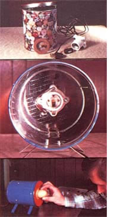

To shed some light on the hen fruit fertility question . . .
"Don't count your chickens before they hatch" is one proverb this poultry raiser has learned to take literally. I know from experience just how frustrating it is to have a hen (or an incubator) waste time trying to hatch an unfertilized egg. However, since I put together my homemade candler-a device that allows me to see inside unhatched egg snot only can I glean the chicks-to-be from the mere omelet fixings, I can also check the freshness and purity of those infertile, "eating-grade" hen fruits. Best of all, my tester was fashioned from a few inexpensive parts and took only minutes to make!
CANDLER CONSTRUCTION
The main component of my little lantern is a good-sized metal can with a lid (mine happens to be a candy container, but a coffee can or any canister with a tight fitting lid would serve just as well). To make the candler, I first positioned an ordinary light fixture inside the can . . . punching a few mounting holes in the container's bottom . . . and then securing the fixture in place with a couple of small nuts and bolts. I made one other opening in the bottom of the canister for the light's electric cord.
On the free end of this wire, I attached an electric plug, and then (for convenience's sake) I added an in-line switch to the cord. To make a "porthole" for illuminating the eggs, I cut a 1-1/2"-diameter hole in the container's lid. A 2-1/4"-diameter cork gasket glued around that opening prevents any egg from cracking, should it accidentally bump the can while being examined. (If you have a hard time finding such a part, cut your own from gasket material, felt, or rubber.)
I added four legs to the side of my candler to allow for horizontal viewing. These supports were easily made by cutting two 6"-long strips from thin sheet metal and then bending each strip to form a pair of legs, which I secured to the can's side with sheet metal screws (you could use pop rivets instead). I also punched a few holes in the container's sides for ventilation before adding a quick coat of high temperature auto engine paint to produce a really snazzy looking finish. Once that had dried, I screwed in a 40-watt light bulb, plugged the contraption in, and darkened the room. With that, I was ready to start candling my eggs!
GLOWING REPORTS
I've found it best to test the fertility of white eggs around the fourth day after they've been laid. Dark ones, on the other hand, give the most accurate results after about a week. Any dirt on the shells should be gently brushed-not washed away. To check for signs of fertility, carefully place an egg's wide end to the candler opening so that the entire oval is illuminated. In a fertile, hatchable egg there will be a fine network of veins running out from a dark center. "Clears" (those with no visible embryonic development) are ones that never were fertilized, while the few with small blood spots could be either fertilized eggs in which the embryo has died or unfathered fruits that have simply had some veins rupture.
Incidentally, you can candle not only to pick out the potential chicks, but also to check the quality of eggs going to market or into the kitchen. Here again, the oval is held with its broad end to the light opening, but in this case, it's given a few quick turns so that the contents rotate within the shell (to promote fuller viewing). A fresh egg will have an air space 1/8" (or less) in depth and a yolk that's free of foreign particles, blood rings, large spots, and other defects. (You probably won't want to sell the eggs with blood spots . . . but if you merely remove the specks with the tip of a knife, they'll do just fine for your own table.)
Well, that's that. My candler, I'll admit, is a fairly simple gadget. But, for the few minutes it took to build, it's sure saved me (and my hens) a whole lot of time!
|
 |
|
|